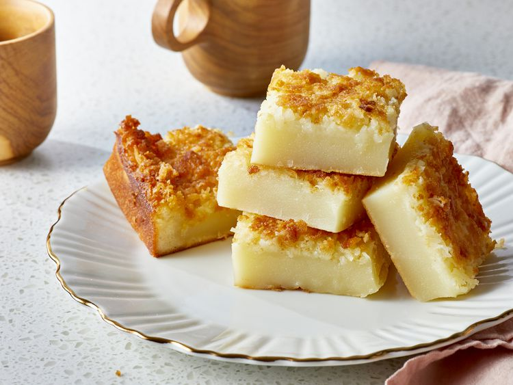

Hawaiian Butter Mochi

This butter mochi recipe makes an easy Hawaiian local-style sweet and chewy treat with coconut and butter in a glutinous rice flour base. Cut into squares and enjoy!
Ingredients
- 1 pound mochiko
- 2 1/2 cups white sugar
- 1 teaspoon baking powder
- 1/2 cup butter (melted)
- 3 cups whole milk
- 5 large eggs
- 1 teaspoon vanilla extract
- 1 cup flaked coconut (sweetened)
Directions
- Gather ingredients. Preheat the oven to 175ºC. Grease the baking dish.
- Whisk eggs, vanilla and milk together in a medium bowl.
- Stir rice flour, sugar and baking powder together in a separate larger bowl.
- Stir egg mixture into flour mixture until blend. Mix in the melted butter and coconut. Pour into the prepared pan.
- Bake in the preheated oven until golden brown, about one hour.
- Cool completely in the pan on a wire rack until mochi has set. The texture will improve as it cools.
- Use a sharp, greased knife to cut into squares.